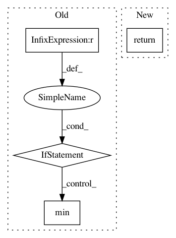

fcb01e3b18c0b3304c4ff0b1f0b8b4ede518f762,ludwig/features/numerical_feature.py,NumericalFeatureMixin,get_feature_meta,#Any#Any#Any#,58
Before Change
"mean": compute(column.astype(np.float32).mean()),
"std": compute(column.astype(np.float32).std())
}
elif preprocessing_parameters["normalization"] == "minmax":
return {
"min": compute(column.astype(np.float32).min()),
"max": compute(column.astype(np.float32).max())
}
else:
After Change
numeric_transformation_registry
)
return numeric_transformer.fit_transform_params(column, backend)
@staticmethod
def add_feature_data(
feature,
In pattern: SUPERPATTERN
Frequency: 4
Non-data size: 4
Instances
Project Name: uber/ludwig
Commit Name: fcb01e3b18c0b3304c4ff0b1f0b8b4ede518f762
Time: 2020-12-03
Author: jimthompson5802@gmail.com
File Name: ludwig/features/numerical_feature.py
Class Name: NumericalFeatureMixin
Method Name: get_feature_meta
Project Name: tryolabs/luminoth
Commit Name: 37e31ed5fc192983ac9023ebe19d0850ca0b2bbf
Time: 2018-08-24
Author: dekked@gmail.com
File Name: luminoth/tools/dataset/readers/object_detection/object_detection_reader.py
Class Name: ObjectDetectionReader
Method Name: _filter_total
Project Name: NervanaSystems/coach
Commit Name: 6c79a442f2fdf6b88002510fc4ed60265ba7f6c9
Time: 2018-01-05
Author: zach.dwiel@intel.com
File Name: utils.py
Class Name: Signal
Method Name: get_min
Project Name: chainer/chainercv
Commit Name: 90b78b1379b3423aa3b4b5d0de7313f88bda23ab
Time: 2019-02-17
Author: yuyuniitani@gmail.com
File Name: chainercv/utils/mask/mask_to_bbox.py
Class Name:
Method Name: mask_to_bbox